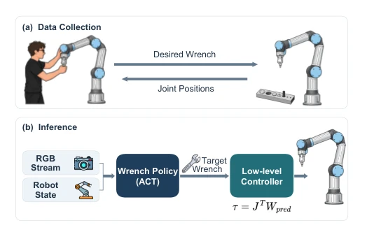
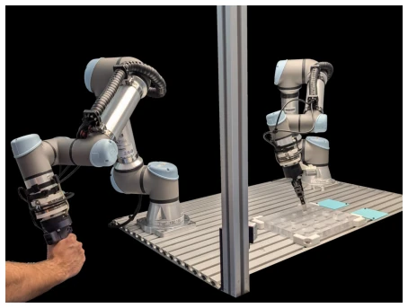
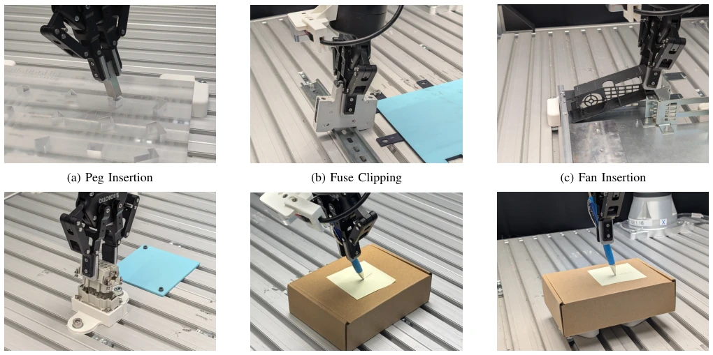
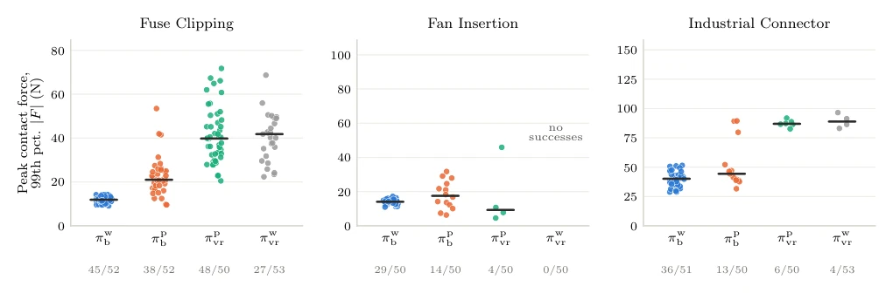
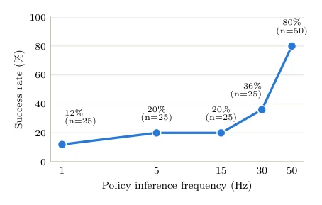

This paper both pours cold water on and offers a ladder for robot learning in contact-rich tasks. The authors did not pursue flashy VLA large models, but returned to the essence: since contact is involved, it is better to learn force directly. The core of Wrench-ACT lies in "unity of knowledge and action" — the action space is force, and data collection must also be force. Force taught via traditional position teleoperation is like blind men touching an elephant, all coincidence. Experiments prove that aligning data interface and action space (Bilateral + Wrench) can significantly improve success rate, average 76.8% vs 40%. But do not rejoice too early, this is essentially a "viability study", few tasks, small data volume, far from generalization. 50Hz inference is enough to stably control force, breaking the superstition that "force control must be high frequency", this point is quite practical. However, taking force as the only output, how to move in free space? Still rely on damping term to cope, flexibility may not be as good as position control. Overall, this is a solid work that turns "force" from observation value to control quantity, but still has distance from "general force control".
Industrial assembly and precision operations cannot do without force regulation, but existing learning strategies mostly treat force as observation, action space remains position or pose [1]. Even if some methods predict force, they rely on hybrid controllers or serve as auxiliary for position control [35]. This means force is a "side effect" after the controller encounters obstacles, rather than the "intention" of the policy. For example, ACP [16] predicts stiffness, still needs position goals. More critically, the data collection method determines the policy upper limit. Traditional VR teleoperation or UMI records position, force is a byproduct of impedance control, cannot reflect operator deliberate force regulation. Wrench-ACT attempts to solve this mismatch: if the policy is to output force, data must contain intentionally applied force. Otherwise, imitation learning is learning "wrong force". This paper argues the feasibility of directly predicting Wrench as the only action output, and emphasizes that data interface (Bilateral) and action space must match.
The overall process is divided into data collection, policy training, and inference execution. Data collection uses bilateral teleoperation, operator applies force via master arm, slave arm mirrors execution and feedbacks force sensation, records 6D Wrench not position. Policy based on ACT [1] architecture, input RGB and robot state, output 6D target Wrench plus gripper open/close. During inference, predicted Wrench directly sent to UR5e's Force Mode, no intermediate position control layer, only keep damping term for stability. Innovation lies in setting stiffness Kp in impedance controller to 0, completely bypassing position error term, making policy explicitly plan force. Standard impedance control usually contains Kp(xdes-x) term, while this method directly predicts wdes, eliminating position goal. Additionally, authors designed four combination strategies (Bilateral/VR x Wrench/Position) for ablation, proving simply changing action space is not enough, must match corresponding force teleoperation data. Inference frequency experiments show 50Hz is enough for stable control, no need for high frequency update.

Fig. 1: Method overview of the proposed pure wrench approach. (A) Data collection via bilateral teleoperation. Operator wrench commands are executed by the follower arm and recorded, while the follower position is mirrored back to the leader. (B) Inference. Multimodal observations (RGB streams and robot state) are processed by the policy to directly predict a 6D target wrench, entirely bypassing intermediate positional control for contact-rich manipulation.

Fig. 3: Bilateral Teleoperation Setup. Operator wrench com- mands, measured by the leader (left), are executed by the follower arm (right). The follower position is mirrored back to the leader.
Evaluated on 5 contact-rich tasks (e.g., peg insertion, connector insertion, writing), comparing four strategy combinations. Core metric is Success Rate. In results, Bilateral + Wrench (πw_b) average success rate 76.8%, significantly better than VR + Position (πp_vr)'s 40%. Especially on peg and connector tasks, advantage is huge. Ablation experiments show, only changing action space (VR + Wrench) or only changing data interface (Bilateral + Position) cannot achieve best effect, confirming importance of "interface-action" alignment. Force analysis shows, πw_b's contact force distribution is narrower, more stable. Frequency ablation finds 50Hz is enough, but too low (1Hz) will fail. In height variation robustness test, Wrench strategy performs better, because not dependent on vertical position error.

Fig. 2: Overview of the five contact-rich manipulation tasks evaluated in this work (a - e) and the ablation evaluating robustness to box-height variation (f)

Fig. 4: Results of the contact force analysis. Bilateral teleoperation with a wrench action space (πw b ) achieves high success rates while maintaining relatively low median 99th-percentile force magnitude and a narrow distribution of applied contact forces.

Fig. 5: Ablation on the inference frequency on the industrial connector task. We show the dependence of success rate on inference speed. Contrary to a widespread assumption, an inference rate of 50 Hz is sufficient for a success rate of 80% in our setting.